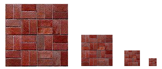

Section 10: Textures
Uniformly colored 3D objects look nice enough, but they are a little bland. Their uniform colors don't have the visual appeal of, say, a brick wall or a plaid couch. Three-dimensional objects can be made to look more interesting and more realistic by adding a texture to their surfaces. A texture—or at least the kind of texture that we consider here—is a 2D image that can be applied to the surface of a 3D object. Here is a picture that shows six objects with various textures:

(Topographical Earth image, courtesy NASA/JPL-Caltech. Brick and metal textures from http://www.grsites.com/archive/textures/. EarthAtNight image taken from the Astronomy Picture of the Day web site; it is also a NASA/JPL image. Copies of the images can be found in the folder named textures in either the opengl-jogl or opengl-c folder.)
Textures might be the most complicated part of OpenGL, and they are a part that has survived, and become more complicated, in the most modern versions since they are so vital for the efficient creation of realistic images. This section covers only part of the OpenGL texture API. It also shows how to load images from files into OpenGL both in C and in JOGL.
Texture Coordinates
When a texture is applied to a surface, each point on the surface has to correspond to a point in the texture. There has to be a way to determine how this mapping is computed. For that, the object needs texture coordinates. As is generally the case in OpenGL, texture coordinates are specified for each vertex of a primitive. Texture coordinates for points inside the primitive are calculated by interpolating the values from the vertices of the primitive.
A texture image comes with its own 2D coordinate system. Traditionally, s used for the horizontal coordinate on the image and t is used for the vertical coordinate. s is a real-number coordinate that ranges from 0 on the left of the image to 1 on the right, while t ranges from 0 at the bottom to 1 at the top. Values of s or t outside of the range 0 to 1 are not inside the image.
The texture coordinates for a vertex are a pair of numbers (s,t) that tell which point in the image is mapped to that vertex. For example, suppose that we want to apply part of an EarthAtNight image to a triangle. Let's say that the area in the image that is to be mapped onto the triangular primitive is the triangle shown here outlined in thick orange:

The vertices of this area have (s,t) coordinates (0.3,0.05), (0.45,0.6), and (0.25,0.7). These coordinates in the image, expressed in terms of s and t, are the texture coordinates that will be mapped to the vertices of the triangular primitive. When I generate the vertices of that primitive, I have to specify the corresponding texture coordinates in the image. This is done by calling glTexCoord2d(s,t). (Or you can use glTexCoord2f.) You can call this method just before generating the vertex. Usually, every vertex of a polygon will have different texture coordinates. To draw the triangle in this case, I could say:
glBegin(GL_TRIANGLES); glNormal3d(0,0,1); glTexCoord2d(0.3,0.05); // Texture coords for vertex (0,0) glVertex2d(0,0); glTexCoord2d(0.45,0.6); // Texture coords for vertex (0,1) glVertex2d(0,1); glTexCoord2d(0.25,0.7); // Texture coords for vertex (1,0) glVertex2d(1,0); glEnd();
Note that there is no particular relationship between the (x,y) coordinates of a vertex, which give its position in space, and the (s,t) texture coordinate associated with the vertex, which tell what point in the image is mapped to the vertex. In fact, in this case, the triangle that I am drawing has a different shape from the triangular area in the image, and that piece of the image will have to be stretched and distorted to fit.
Note that texture coordinates are attributes of vertices. When you specify a vertex with glVertex*, the current texture coordinates are copied and become attributes associated with the vertex.
Sometimes, it's difficult to decide what texture coordinates to use. One case where it's easy is applying the complete texture to a rectangle. Here is a code segment that draws a square in the xy-plane, with appropriate texture coordinates to map the entire image onto the square:
glBegin(GL_TRIANGLE_FAN); glNormal3f(0,0,1); glTexCoord2d(0,0); // Texture coords for lower left corner glVertex2d(-0.5,-0.5); glTexCoord2d(1,0); // Texture coords for lower right corner glVertex2d(0.5,-0.5); glTexCoord2d(1,1); // Texture coords for upper right corner glVertex2d(0.5,0.5); glTexCoord2d(0,1); // Texture coords for upper left corner glVertex2d(-0.5,0.5); glEnd();
Unfortunately, the standard shapes in the GLUT library do not come with texture coordinates (except for the teapot, which does). You will be relieved to know that I have written a set of functions for drawing similar shapes that do come with texture coordinates. The functions can be found in TexturedShapes.java for JOGL or in textured-shapes.c for C. Of course, there are many ways of applying a texture to a given object, and when you use my functions, you are stuck with my decision about how to do so. The objects are drawn with a variety of textures in the JOGL program TextureDemo.java and in the C program texture-demo.c.
One last question: What happens if you supply texture coordinates that are not in the range from 0 to 1? It turns out that such values are legal, but the default behavior, which is to extend the colors from the edges of the texture image to fill the rest of the st-plane, is not very desirable. I will tell you how to change this behavior in the next subsection.
Texture Targets and Texture Parameters
OpenGL can actually use one-dimensional and three-dimensional textures, as well as two-dimensional. Because of this, many OpenGL functions dealing with textures take a texture target as a parameter, to tell whether the function should be applied to one, two, or three dimensional textures. For us, the only texture target will be GL_TEXTURE_2D.
There are a number of options that apply to textures, to control the details of how textures are applied to surfaces. Some of the options can be set using the glTexParameteri() function. Here are two examples:
glTexParameteri(GL_TEXTURE_2D, GL_TEXTURE_WRAP_S, GL_REPEAT); glTexParameteri(GL_TEXTURE_2D, GL_TEXTURE_WRAP_T, GL_REPEAT);
The first parameter to this function is the texture target, the second is the name of the parameter that is being set, and the third is the value of the parameter. The properties GL_TEXTURE_WRAP_S and GL_TEXTURE_WRAP_T tell how OpenGL treats texture coordinates outside of the range 0.0 to 1.0. The value GL_REPEAT tells OpenGL to repeat the texture over and over to fill the entire plane, so that using s and t values outside the usual range will simply cause the texture to be repeated. With this setting of the parameters, for example, if you supply texture coordinates (0,0), (0,2), (2,2), and (2,0) for the four vertices of a square, then the square will be covered with four copies of the texture. For a repeating texture, such as a brick wall image, this can be much more effective than stretching a single copy of the image to cover the entire square. This behavior is not the default, and you will almost always want to use two commands given above to get the repeating texture behavior.
About MipMaps and Filtering
When a texture is applied to a surface, the pixels in the texture do not usually match up one-to-one with pixels on the surface, and in general, the texture must be stretched or shrunk as it is being mapped onto the surface. Sometimes, several pixels in the texture will be mapped to the same pixel on the surface. In this case, the color that is applied to the surface pixel must somehow be computed from the colors of all the texture pixels that map to it. This is an example of filtering; in particular, it is "minification filtering" because the texture is being shrunk. When one pixel from the texture covers more than one pixel on the surface, the texture has to be magnified, and we have an example of "magnification filtering."
One bit of terminology before we proceed: The pixels in a texture are referred to as texels, short for texture pixels, and I will use that term from now on.
When deciding how to apply a texture to a point on a surface, OpenGL has the texture coordinates for that point. Those texture coordinates correspond to one point in the texture, and that point lies in one of the texture's texels. The easiest thing to do is to apply the color of that texel to the point on the surface. This is called nearest neighbor filtering. It is very fast, but it does not usually give good results. It doesn't take into account the difference in size between the pixels on the surface and the texels. An improvement on nearest neighbor filtering is linear filtering, which can take an average of several texel colors to compute the color that will be applied to the surface.
The problem with linear filtering is that it will be very inefficient when a large texture is applied to a much smaller surface area. In this case, many texels map to one pixel, and computing the average of so many texels becomes very inefficient. OpenGL has a neat solution for this: mipmaps.
A mipmap for a texture is a scaled-down version of that texture. A complete set of mipmaps consists of the full-size texture, a half-size version in which each dimension is divided by two, a quarter-sized version, a one-eighth-sized version, and so on. If one dimension shrinks to a single pixel, it is not reduced further, but the other dimension will continue to be cut in half until it too reaches one pixel. In any case, the final mipmap consists of a single pixel. Here are the first few images in the set of mipmaps for a brick texture:

You'll notice that the mipmaps become small very quickly. The total memory used by a set of mipmaps is only about one-third more than the memory used for the original texture, so the additional memory requirement is not a big issue when using mipmaps.
Mipmaps are used only for minification filtering. They are essentially a way of pre-computing the bulk of the averaging that is required when shrinking a texture to fit a surface. To texture a pixel, OpenGL can first select the mipmap whose texels most closely match the size of the pixel. It can then do linear filtering on that mipmap to compute a color, and it will have to average at most a few texels in order to do so.
In newer versions of OpenGL, you can get OpenGL to generate mipmaps automatically. In earlier versions, if you want to use mipmaps, you must either load each mipmap individually, or you must generate them yourself. (The GLU library has a method, gluBuild2DMipmaps that can be used to generate a set of mipmaps for a 2D texture.) However, my sample programs do not use mipmaps.
OpenGL supports several different filtering techniques for minification and magnification. The filters can be set with glTexParameteri():
glTexParameteri(GL_TEXTURE_2D, GL_TEXTURE_MAG_FILTER, magFilter); glTexParameteri(GL_TEXTURE_2D, GL_TEXTURE_MIN_FILTER, minFilter);
where magFilter and minFilter are constants that specify the filtering algorithm. For the magFilter, the only options are GL_NEAREST and GL_LINEAR, giving nearest neighbor and linear filtering. The default for the MAG filter is GL_LINEAR, and there is rarely any need to change it. For minFilter, in addition to GL_NEAREST and GL_LINEAR, there are four options that use mipmaps for more efficient filtering. The default MIN filter is GL_NEAREST_MIPMAP_LINEAR, which does averaging between mipmaps and nearest neighbor filtering within each mipmap. For even better results, at the cost of greater inefficiency, you can use GL_LINEAR_MIPMAP_LINEAR, which does averaging both between and within mipmaps. (You can research the remaining two options on your own if you are curious.)
One very important note: If you are not using mipmaps for a texture, it is imperative that you change the minification filter for that texture to GL_NEAREST or, more likely, GL_LINEAR. The default MIN filter requires mipmaps, and if mipmaps are not available, then the texture is considered to be improperly formed, and OpenGL ignores it! Remember that if you don't create mipmaps and if you don't change the minification filter, then your texture will simply be ignored by OpenGL!
Texture Transformation
Recall that textures are applied to objects using texture coordinates. The texture coordinates for a vertex determine which point in a texture is mapped to that vertex. Textures are most often images, which are two-dimensional, and the two coordinates on a texture image are referred to as s and t. Since OpenGL also supports one-dimensional textures and three-dimensional textures, texture coordinates cannot be restricted to two coordinates. In fact, a set of texture coordinates in OpenGL is represented internally in the form of homogeneous coordinates, which are referred to as (s,t,r,q). We have used glTexCoord2d to specify texture s and t coordinates, but a call to glTexCoord2d(s,t) is really just shorthand for glTexCoord4d(s,t,0,1).
Since texture coordinates are no different from vertex coordinates, they can be transformed in exactly the same way. OpenGL maintains a texture transformation matrix as part of its state, along with the modelview matrix and projection matrix. When a texture is applied to an object, the texture coordinates that were specified for its vertices are transformed by the texture matrix. The transformed texture coordinates are then used to pick out a point in the texture. Of course, the default texture transform is the identity, which has no effect.
The texture matrix can represent scaling, rotation, translation and combinations of these basic transforms. To specify a texture transform, you have to use glMatrixMode() to set the matrix mode to GL_TEXTURE. With this mode in effect, calls to methods such as glRotate*, glScale*, and glLoadIdentity are applied to the texture matrix. For example to install a texture transform that scales texture coordinates by a factor of two in each direction, you could say:
glMatrixMode(GL_TEXTURE); glLoadIdentity(); // Make sure we are starting from the identity matrix. glScalef(2,2,2); glMatrixMode(GL_MODELVIEW); // Leave matrix mode set to GL_MODELVIEW.
Now, what does this actually mean for the appearance of the texture on a surface? This scaling transforms multiplies each texture coordinate by 2. For example, if a vertex was assigned 2D texture coordinates (0.4,0.1), then that vertex will be mapped, after the texture transform is applied, to the point (s,t) = (0.8,0.2) in the texture. The texture coordinates vary twice as fast on the surface as they would without the scaling transform. A region on the surface that would map to a 1-by-1 square in the texture image without the transform will instead map to a 2-by-2 square in the image—so that a larger piece of the image will be seen inside the region. In other words, the texture image will be shrunk by a factor of two on the surface! More generally, the effect of a texture transformation on the appearance of the texture is the inverse of its effect on the texture coordinates. (This is exactly analogous to the inverse relationship between a viewing transformation and a modeling transformation.) If the texture transform is translation to the right, then the texture moves to the left on the surface. If the texture transform is a counterclockwise rotation, then the texture rotates clockwise on the surface.
I mention texture transforms here mostly to show how OpenGL can use transformations in another context. But it is sometimes useful to transform a texture to make it fit better on a surface. And for an unusual effect, you might even animate the texture transform to make the texture image move on the surface.
Using Textures in C
It's about time that we looked at the process of actually using an image as a texture. The whole process is different enough in C and in JOGL that I will discuss the two languages separately, starting with C. In the most common case, the image that you want to use as a texture is in a file. OpenGL, however, does not have functions for loading images from a file, so you need some other means to get the image data from the file into the computer's memory. Once you have the image is in memory, there is an OpenGL function that you can use to load the image data into a texture.
The OpenGL function for loading image data from the computer's memory into a 2D texture is glTexImage2D(), which takes the form:
glTexImage2D(target, mipmapLevel, internalFormat, width, height, border,
format, dataType, pixels);
The target should be GL_TEXTURE_2D. The mipmapLevel should ordinarily be 0. It is used when you want to load individual mipmaps for a texture, and the value 0 means that you are loading the main texture. The internalFormat says how the texture data is to be stored in OpenGL texture memory. It is ordinarily GL_RGB to store an 8-bit red/green/blue component for each pixel. Another possibility is GL_RGBA, which adds an alpha component. The width and height give the size of the image; the values should usually be powers of two. The value of border should be 0; the only other possibility is 1, which indicates that a one-pixel border has been added around the image data. The last three parameters describe the image data. The format tells how the image data is represented in memory and is often GL_RGB or GL_RGBA. The dataType is usually GL_UNSIGNED_BYTE, indicating that each color component is represented as a one-byte value in the range 0 to 255. And pixels is a pointer to the start of the actual color data for the pixels. The image data from that location will be read into the texture, starting at the bottom left corner of the texture, filling in the bottom row of pixels in the texture, then the row above that, and so on. If the dataType is GL_UNSIGNED_BYTE, then the number of bytes of image data must be 3*width*height for GL_RGB data and 4*width*height for GL_RGBA data.
I note that the width and the height of a texture must be a power of two in OpenGL 1.0. In later versions of OpenGL, starting with version 2.0, this restriction was relaxed, but even then power-of-two textures probably work more efficently.
This all looks rather complicated, but in practice, a call to glTexImage2D generally takes the form
glTexImage2D(GL_TEXTURE_2D, 0, GL_RGBA, width, height, 0,
GL_RGB, GL_UNSIGNED_BYTE, pixels);
Calling this function will load the image into the texture, but it does not cause the texture to be used. For that, you also have to call
glEnable(GL_TEXTURE_2D);
If you only want to use the texture on some objects, you can enable GL_TEXTURE_2D before drawing objects that you want to be textured and disable it before drawing untextured objects. You can also change the texture that is being used at any time by calling glTexImage2D.
The problem that remains is how to get the image data into memory before calling glTexImage2D. One possibility is to compute the data—you can actually have your program generate texture data on the fly. More likely, however, you want to load it from a file. To do that, you probably want to use an image library. Several free image libraries are available. I will discuss how one of them, FreeImage, can be used to load OpenGL textures. FreeImage can be obtained from http://freeimage.sourceforge.net/, but I was able to use it in Linux simply by installing the package libfreeimage-dev. To make it available to my program, I added #include "FreeImage.h" to the top of my C program, and I added the option -lfreeimage to the gcc command to make the library available to the compiler. (See the program texture-demo.c for an example that uses this library.) Instead of discussing FreeImage in detail, I present a well-commented function that uses it to load image data from a file:
void* imgPixels; // Pointer to raw RGB data for texture.
// (Note: void* is a standard C type representing
// a pointer that can point to anything at all.)
int imgWidth; // Width of the texture image.
int imgHeight; // Height of the texture image.
void loadTexture( char* fileName ) {
// Loads a texture image using the FreeImage library, and stores
// the required info in global variables imgPixels, imgWidth, imgHeight.
// The parameter fileName is a string that contains the name of the
// image file from which the image is to be loaded. If the
// image can't be loaded, then imgPixels will be set to be a null pointer.
imgPixels = 0; // Null pointer to signal that data has not been read.
FREE_IMAGE_FORMAT format = FreeImage_GetFIFFromFilename(fileName);
// FREE_IMAGE_FORMAT is a type defined by the FreeImage library.
// Here, the format is determined from the file extension in
// the file name, such as .png, .jpg, or .gif. Many formats
// are supported.
if (format == FIF_UNKNOWN) {
printf("Unknown file type for texture image file %s\n", fileName);
return;
}
FIBITMAP* bitmap = FreeImage_Load(format, fileName, 0);
// FIBITMAP is a type defined by the FreeImage library, representing
// the raw image data plus some metadata such as width, height,
// and the format of the image data. This actually tries to
// read the data from the specified file.
if (!bitmap) {
printf("Failed to load image %s\n", fileName);
return;
}
FIBITMAP* bitmap2 = FreeImage_ConvertTo24Bits(bitmap);
// This creates a copy of the image, with the data represented
// in standard RGB (or BGR) format, for use with OpenGL.
FreeImage_Unload(bitmap);
// After finishing with a bitmap, it should be disposed.
// We are finished with bitmap, but not with bitmap2, since
// we will continue to use the data from bitmap2.
imgPixels = FreeImage_GetBits(bitmap2); // Get the data we need!
imgWidth = FreeImage_GetWidth(bitmap2);
imgHeight = FreeImage_GetHeight(bitmap2);
if (imgPixels) {
printf("Texture image loaded from file %s, size %dx%d\n",
fileName, imgWidth, imgHeight);
}
else {
printf("Failed to get texture data from %s\n", fileName);
}
} // end loadTexture
After this function has been called, the data that we need for glTexImage2D() is in the global variables imgWidth, imgHeight, and imgPixels (or imgPixels is 0 to indicate that the attempt to load the image failed). There is one complication: FreeImage will store the color components for a pixel in the order red/green/blue on some platforms but in the order blue/green/red on other platforms. The second data format is called GL_GBR in OpenGL. If you use the wrong format in glTextImage2D(), then the red and blue components of the color will be reversed. To tell the difference, you can use the FreeImage constant FI_RGBA_RED, which tells the position of the red color component in pixel data. This constant will be 0 if the format is GL_RGB and will be 2 if the format is GL_BGR. So, to use the texture in OpenGL, you might say:
if ( imgPixels ) { // The image data exists
int format; // The format of the color data in memory
if ( FI_RGBA_RED == 0 )
format = GL_RGB;
else
format = GL_BGR;
glTexImage2D(GL_TEXTURE_2D, 0, GL_RGBA, imgWidth, imgHeight, 0, format,
GL_UNSIGNED_BYTE, imgPixels);
glEnable(GL_TEXTURE_2D);
}
else { // The image data was not loaded, so don't attempt to use the texture.
glDisable(GL_TEXTURE_2D);
}
To be even more careful, you could check that the width and the height of the image are powers of two. If not, you can resize it using the function FreeImage_Rescale() from the FreeImage library.
Using Textures with JOGL
JOGL comes with several classes that make it fairly easy to use textures in Java, notably Texture and TextureIO in package com.jogamp.opengl.util.texture and AWTTextureIO in package com.jogamp.opengl.util.texture.awt. For an example of using textures with JOGL, see the program TextureDemo.java.
An object of type Texture represents a texture that has already been loaded into OpenGL. Once you have an object, texture, of type Texture, you just need to call
texture.bind(gl);
to tell OpenGL to use the texture for objects that it will draw. (This is roughly the equivalent of calling glTexImage2D() in C, except that the texture has already been loaded and texture.bind() just tells OpenGL to use it.) Before the texture will actually be applied, however, you still have to enable texturing by calling gl.glEnable(GL2.GL_TEXTURE_2D) or, equivalently,
texture.enable(gl);
You can set texture parameters in the usual way, by calling gl.glTexParameteri(), but it is preferable to use the Texture class to set the parameters, by calling
texture.setTexParameteri( gl, parameterName, value );
since this allows you to associate different parameter values with different Texture objects. For example,
texture.setTexParameteri( gl, GL2.GL_TEXTURE_WRAP_S, GL2.GL_REPEAT ); texture.setTexParameteri( gl, GL2.GL_TEXTURE_WRAP_T, GL2.GL_REPEAT );
So, once you have a Texture, it's pretty easy to use. But there remains the problem of creating Texture objects. For that, you can use static methods in the TextureIO and AWTTextureIO classes. For example, if fileName is the name of an image file (or a path to such a file), then you can say
texture = TextureIO.newTexture( new File(fileName), true );
to load a texture from the file, where texture is of type Texture. The boolean parameter here, and in all the methods we will look at, tells JOGL whether or not to create mipmaps for the texture; by passing true, we automatically get a full set of mipmaps.
One important note: Java's texture creation functions will only work when an OpenGL context is "current." This will be true in the event-handling methods of a GLEventListener, including the init() and display() methods. However, it will not be true in ordinary methods and constructors.
Of course, in Java, you are more likely to store the image as a resource in the program than as a separate file. If resourceName is a path to the image resource, you can load the image into a texture with
URL textureURL; textureURL = getClass().getClassLoader().getResource( resourceName ); texture = TextureIO.newTexture(textureURL, true, null);
The third parameter to this version of newTexture specifies the image type and can be given as a file suffix such as "png" or "jpg"; the value null tells OpenGL to autodetect the image type, which should work in general. (By the way, all the texture-loading code that I discuss here can throw exceptions, which you will have to catch or otherwise handle in some way.)
One problem with all this is that textures loaded in this way will be upside down! This happens because Java stores image data from the top row of the image to the bottom, whereas OpenGL expects images data to be stored starting with the bottom row. If this is a problem for you, you can flip the image before using it to create a texture. To do that, you have to load the image into a BufferedImage and then load that into a texture using the AWTTextureIO class. For example, assuming resourceName is a path to an image resource in the program:
URL textureURL; textureURL = getClass().getClassLoader().getResource( resourceName ); BufferedImage img = ImageIO.read( textureURL ); ImageUtil.flipImageVertically( img ); textures = AWTTextureIO.newTexture(GLProfile.getDefault(), img, true);
The ImageUtil class is defined in package com.jogamp.opengl.util.awt. Here, I obtained a BufferedImage by reading it from a resource. You could also read it from a file or even draw it using Java 2D graphics.
Drawing Texture Images with OpenGL
Texture images for use in an OpenGL program usually come from an external source, most often an image file. However, OpenGL is itself a powerful engine for creating images. Sometimes, instead of loading an image file, it's convenient to have OpenGL create the image internally, by rendering it. This is possible because OpenGL can read texture data from its own color buffer, where it does its drawing. To create a texture image using OpenGL, you just have to draw the image using standard OpenGL drawing commands and then load that image as a texture using the method
glCopyTexImage2D( target, mipmapLevel, internalFormat,
x, y, width, height, border );
In this method, target will be GL_TEXTURE_2D; mipmapLevel should be zero; the internalFormat will ordinarily be GL_RGB or GL_RGBA; x and y specify the lower left corner of the rectangle in the color buffer from which the texture will be read and are usually 0; width and height are the size of that rectangle; and border will usually be 0. As usual with textures, the width and height should ordinarily be powers of two. That is, a call to glCopyTexImage2D will typically look like
glCopyTexImage2D(GL_TEXTURE_2D, 0, GL_RGB, x, y, width, height, 0);
The end result is that the specified rectangle from the color buffer will be copied to texture memory and will become the current 2D texture. This works in the same way as a call to glTexImage2D(), except for the source of the image data.
An example can be found in the JOGL program TextureFromColorBuffer.java and in the C version texture-from-color-buffer.c. This program draws the windmill-and-cart scene from Section 3 and then uses that drawing as a texture on 3D objects. Here is an image from the program, showing the texture on a cylinder:
The texture is animated! A new texture is drawn for each frame of the animation. All the work is done in the display method. In that method, the current frame of the windmill-and-cart scene is first drawn as a 2D scene with lighting disabled. This picture is not shown on the computer screen; since double-buffering is used, the drawing is done off-screen and the image will be erased before it's ever shown on screen. The glCopyTexImage2D() function is then called to copy the scene as the current texture. Then, the color buffer is cleared, lighting is enabled, and a 3D projection is set up before finally drawing the 3D object that is seen on the computer screen.